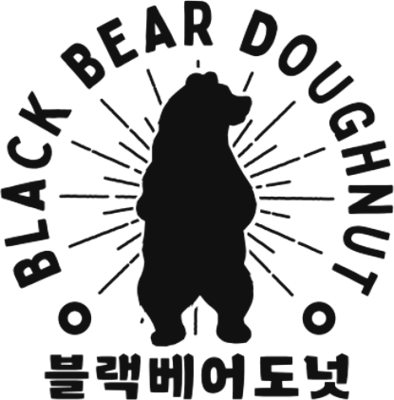

since 2019
The bear by the beach
Black Bear Donut began in 2019 as a first-generation handmade-donut brand. Here by Gwangalli, the routine is the same as on day one: the lights come on before sunrise, the dough is mixed by hand, and whatever we make today is sold today.